China Employee Termination 2026: Pulse Cost-Risk Matrix Brief for Foreign Employers
Key takeaways
- In China, termination decisions should be priced as a cost-risk matrix, not a single severance line item.
- The best early predictor of dispute exposure is route/evidence/payroll alignment before employee communication.
- Foreign employers can improve outcomes by using a “matrix gate”: legal route confidence, documentation integrity, and settlement execution readiness.
- City-level practice variation remains a material uncertainty, so local validation should be embedded in each case file.
- Pulse-style reporting works best when legal context is explained first, then translated into immediate business actions.
What changed and why this matters now
Many multinational teams in 2026 are under pressure to move faster on workforce adjustments while maintaining compliance. That pressure often produces a familiar mistake: decisions are framed around payout speed, while route defensibility and process evidence are treated as secondary. In China, that ordering can be expensive. Employer-side termination is not “pay and close.” It is a legally structured action where route selection, documentation chronology, communication discipline, and payroll/tax close-out work as one package.
This brief uses a cost-risk matrix as the primary narrative format (different from watchlist and myth-vs-fact runs) so foreign decision makers can quickly see which choices are cheap but fragile, costly but safer, or operationally efficient over time. The legal appendix appears at the end as secondary depth.
Plain-language legal context first
PRC labor law architecture generally requires a lawful statutory basis and coherent process support for employer-initiated termination. Publicly available references include the Labor Contract Law framework, implementing regulation references (including Decree No. 535 context), and Supreme People’s Court labor-dispute interpretation updates. For non-local teams, the practical reading is straightforward: business rationale alone is not enough. If route logic and evidence chain are weak, the company may face higher arbitration risk, reopening costs, and reduced settlement leverage.
A useful mental model for foreign readers: China termination behaves like a compliance transaction with five linked blocks—route qualification, evidence integrity, communication control, payroll/tax settlement execution, and archive readiness. If one block fails, cost and dispute probability usually rise together.
Pulse matrix: where cost and risk actually sit
Matrix axis definition
- Horizontal axis (cost now): immediate cash/operational spend (severance, advisory time, execution overhead).
- Vertical axis (risk later): probability and impact of dispute, correction, delay, and reputational drag.
Quadrant A — Low immediate cost / High downstream risk
Typical pattern: rushed route lock, incomplete chronology, payroll reconciliation deferred until after communication.
Pulse read: Looks efficient this week, often expensive next quarter.
Action now: move this quadrant to “blocked” status unless legal route confidence and payroll readiness are both verified.
Quadrant B — High immediate cost / High downstream risk
Typical pattern: paying above internal budget while still lacking coherent legal narrative and evidence consistency.
Pulse read: Spending more without buying certainty.
Action now: stop value leakage; redesign strategy (either strengthen route with evidence or shift to controlled negotiated framework with clear documentation standards).
Quadrant C — High immediate cost / Lower downstream risk
Typical pattern: heavy advisory involvement, robust documentation, conservative communication, full settlement controls.
Pulse read: Defensive but sometimes necessary for complex cases.
Action now: maintain for high-sensitivity cases, then standardize reusable controls to reduce future per-case cost.
Quadrant D — Moderate immediate cost / Lower downstream risk (target state)
Typical pattern: route-first governance, standardized chronology, city memo discipline, payroll/tax pre-communication gate, strong archive QA.
Pulse read: Best long-run balance for recurring foreign-employer operations.
Action now: institutionalize as default operating lane.
Decision matrix for foreign employers (practical)
| Decision lens | Low maturity signal | Target maturity signal | Immediate implication |
|---|---|---|---|
| Legal route selection | Route picked by urgency | Route scored by defensibility + facts | Avoid no-go routes before manager action |
| Evidence integrity | Fragmented notes/emails | Versioned chronology with ownership | Better arbitration posture |
| Manager communication | Script improvisation | Approved script + meeting metadata | Fewer contradiction risks |
| Payroll/tax closure | Reconciled after meeting | Reconciled before meeting | Lower secondary dispute risk |
| Local interpretation | National template only | City-level validation memo per case | Better localization quality |
| Archive readiness | Docs stored ad hoc | Indexed evidence map + retention rule | Faster response in disputes |
Why this framing works for non-China teams
Foreign leadership often asks one question first: “What will this cost?” In China termination, that question is valid but incomplete. A cost-only lens can reward short-term speed while hiding probable downstream rework. The matrix format aligns finance, HR, legal, and payroll around one reality: low immediate spend can still be high-total-cost if risk control is weak. By translating legal requirements into matrix positions, cross-border teams can make decisions that are both explainable to headquarters and executable locally.
Practical scenarios
Scenario 1: Budget-driven reduction with aggressive closure target
A regional CFO requests rapid closure and minimal advisory spend. HR proposes accelerated communication with a draft payment model but incomplete route evidence. This is classic Quadrant A: attractive immediate cost, elevated future risk.
Better move: keep communication locked until route memo and chronology pack pass review; use finance dashboard to compare “quick close” vs “controlled close” expected cost bands.
Scenario 2: Senior specialist performance case with mixed records
Managers report long-term underperformance but records are uneven. Legal route appears possible, yet evidence quality is uncertain. Without repair, this may drift into Quadrant B (high spend, still high risk).
Better move: execute a documentation remediation sprint, align script and factual record, and only then finalize route.
Scenario 3: Negotiated separation appears complete, then payroll mismatch appears
The separation conversation ends constructively, but final payroll/tax elements are later corrected. Employee trust drops and dispute probability rises.
Better move: treat payroll/tax readiness as a pre-communication gate and preserve reconciliation artifacts in the same case folder.
Operating SOP (matrix-gated)
Gate 1 — Route confidence gate
Owners: HRBP + Legal + local reviewer
- Open case with city/entity identifiers.
- Score route confidence: legal basis clarity, fact consistency, evidence sufficiency.
- Classify case into matrix quadrant and expected risk band.
Gate rule: no employee-facing action if route confidence is below threshold.
Gate 2 — Evidence integrity gate
Owners: HR Operations + Manager + Compliance reviewer
- Build chronology ledger with timestamped events and source owner.
- Reconcile manager narrative against records.
- Confirm script consistency with route memo.
Gate rule: contradictory entries trigger escalation and hold.
Gate 3 — Settlement and payroll readiness gate
Owners: Payroll + Tax + HR Ops
- Finalize payment components and timing.
- Validate leave treatment, social insurance handoff logic, and IIT mapping.
- Prepare payment proof and payslip narrative alignment.
Gate rule: communication cannot proceed without dual sign-off from payroll and HR compliance.
Gate 4 — Communication control gate
Owners: HR lead + Manager + witness
- Use approved script blocks.
- Capture meeting metadata and key statements.
- Trigger settlement execution workflow same day.
Gate rule: material script deviation requires incident note and legal review.
Gate 5 — Archive and dispute-readiness gate
Owners: Compliance + Records admin
- Index all records to case ID.
- Produce closure memo linking route, evidence, and payment execution.
- Store retention metadata for fast retrieval.
Gate rule: case status remains “open” until archive QA passes.
Required document checklist (minimum)
- Employee profile and contract snapshot
- Route rationale memo (with alternatives)
- City-level validation memo
- Chronology ledger with source references
- Relevant performance/discipline records
- Approved communication script and version history
- Settlement terms and acknowledgments (if applicable)
- Final payroll/severance worksheet
- IIT/social insurance treatment note
- Payment execution proof
- Closure memo and archive index
Exception handling matrix
Exception A: Missing evidence near communication deadline
- Risk signal: route confidence drops.
- Response: automatic delay + remediation task list with owners.
- SLA suggestion: re-evaluate within 24-48 hours.
Exception B: Headquarters pushes for immediate execution
- Risk signal: governance override pressure.
- Response: require written risk acceptance and expected-cost comparison.
- SLA suggestion: same-day escalation review.
Exception C: Employee challenges facts during meeting
- Risk signal: narrative dispute emerging.
- Response: move to documented clarification path; avoid unscripted arguments.
- SLA suggestion: legal follow-up window within one business day.
Exception D: Payroll/tax mismatch discovered post-communication
- Risk signal: secondary compliance/reputation exposure.
- Response: incident ticket, corrective calculation, transparent correction record.
- SLA suggestion: correction workflow launched same day.
Exception E: Local interpretation conflict among advisors
- Risk signal: unresolved legal-operational ambiguity.
- Response: issue interpretation memo with options, risks, and owner decision.
- SLA suggestion: decision point in 48 hours with local counsel input.
System implementation notes
- Create structured case fields: route score, evidence score, payroll readiness, quadrant label.
- Enforce workflow automation so communication task stays locked until Gate 3 sign-off.
- Attach immutable audit logs for script and approval changes.
- Add dashboard metrics: case count by quadrant, hold reasons, correction frequency, dispute outcomes.
- Use outcome tagging to improve route selection quality over time.
Common mistakes and prevention
- Mistake: treating severance spend as the main risk control.
Prevention: use matrix view with route/evidence/payroll criteria.
- Mistake: letting manager urgency set legal sequence.
Prevention: hard gates and escalation policy.
- Mistake: city differences ignored.
Prevention: mandatory city memo per case.
- Mistake: communication before settlement readiness.
Prevention: payroll/tax sign-off as lock condition.
- Mistake: weak archive discipline.
Prevention: closure QA and indexed evidence map.
What to do now (action plan)
- Implement a termination matrix dashboard for all active cases.
- Define route confidence thresholds and no-go triggers.
- Standardize chronology templates and evidence ownership tags.
- Add pre-communication payroll/tax gate with dual sign-off.
- Train managers on script discipline and contradiction risk.
- Run a retrospective on recent exits and map them to quadrants.
- Update local playbooks where repeat failure signals appear.
What to watch next
- Local enforcement practice may continue to diverge in emphasis across cities.
- Cost pressure could increase attempts to bypass governance gates.
- Practitioner guidance may update faster than static internal policies, requiring periodic refresh.
FAQ
1) Is a higher severance offer always lower risk in China?
Not necessarily. If route and evidence are weak, higher spend may still leave significant dispute exposure.
2) Why use a matrix instead of a checklist only?
A matrix helps leadership compare short-term spend with likely downstream risk, improving cross-functional decisions.
3) Should payroll be involved before legal route is finalized?
Yes. Payroll and legal streams should run in parallel; late payroll alignment often creates avoidable disputes.
4) Can one policy apply across all China locations?
A central framework can apply, but implementation should include city-specific validation each time.
5) What is the biggest preventable failure?
Communicating before route, evidence, and payroll controls are aligned.
6) How should we handle uncertainty in local interpretation?
Document it explicitly, seek localized advice, and assign decision ownership with deadlines.
7) What is a realistic target operating quadrant?
Quadrant D: moderate immediate cost with lower downstream risk through standardized controls.
Legal depth appendix (secondary)
This brief draws on official/legal texts and practitioner commentary to support an operations-first framework for foreign employers. The primary legal anchors are the PRC Labor Contract Law framework, implementing regulation references associated with Decree No. 535, and Supreme People’s Court labor-dispute interpretation materials. Practitioner sources (including international and China-focused analyses) consistently emphasize that statutory basis and factual/process coherence drive defensibility. Market/payroll context sources help connect legal choices with execution realities in compensation and tax treatment. Remaining uncertainty is concentrated in fact-specific and city-specific application, which is why local counsel validation remains essential in live cases.
Disclaimer
This material is informational only and does not constitute legal, tax, or employment advice.
Sources
- National People’s Congress (Labor Contract Law, English text), accessed 2026-03-05: http://www.npc.gov.cn/zgrdw/englishnpc/Law/2007-12/13/content_1384064.htm
- State Council Gazette reference (implementing regulation / Decree No. 535 context), accessed 2026-03-05: https://www.gov.cn/gongbao/content/2008/content_1124615.htm
- Supreme People’s Court labor dispute interpretation update page, accessed 2026-03-05: https://www.court.gov.cn/fabu/xiangqing/243981.html
- China Briefing, Employee Termination in China (practical employer guide), accessed 2026-03-05: https://www.china-briefing.com/news/employee-termination-in-china/
- ICLG Employment & Labour Laws and Regulations: China (comparative practitioner context), accessed 2026-03-05: https://iclg.com/practice-areas/employment-and-labour-laws-and-regulations/china
- Littler ASAP analysis on China employment law developments (practitioner lens), accessed 2026-03-05: https://www.littler.com/news-analysis/asap/key-recent-developments-chinas-employment-law-china-us-comparative-perspective
- PwC PRC Individual Income Tax summary (market/payroll context), accessed 2026-03-05: https://taxsummaries.pwc.com/peoples-republic-of-china/individual/taxes-on-personal-income
Need local employment support in China?
If you need a compliance-first partner for hiring, payroll, and risk controls in China, China-Payroll.com can help evaluate the right setup.
Image Prompt Pack
Create a 16:9 hero image for article title: 'China Employee Termination 2026: Pulse Cost-Risk Matrix Brief for Foreign Employers'. Scene: global operations team evaluating workforce model options for China market entry. Include motifs: decision matrix, org cha…